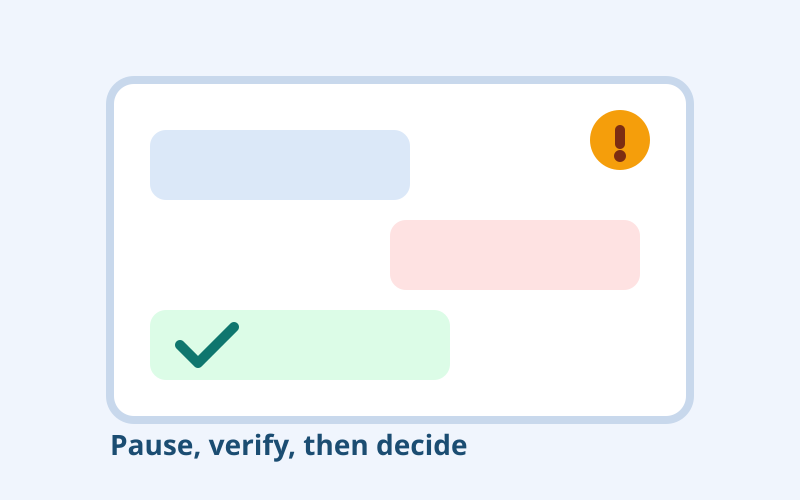

Audience
- People new to online dating who are unsure what is normal vs manipulative
- Users returning to dating apps after long breaks
- Parents, educators, and community moderators teaching scam awareness
Interactive Concept
A scenario-driven learning format using realistic dating and messaging situations to teach people how manipulation works and how to respond safely.

A match quickly pushes for intense trust language and asks to move off-platform in the first 24 hours.
After a short connection, the person asks for urgent money for transport, phone repair, or legal trouble.
A message says your match cannot continue chatting unless you “verify” through a linked login page.
A convincing voice note asks for secrecy and immediate action, but avoids normal verification checks.
Conversation shifts into “easy investing” coaching, framed as proof of commitment and shared future plans.
Try the first static branching prototype to test interaction flow and debrief style.
Open prototype